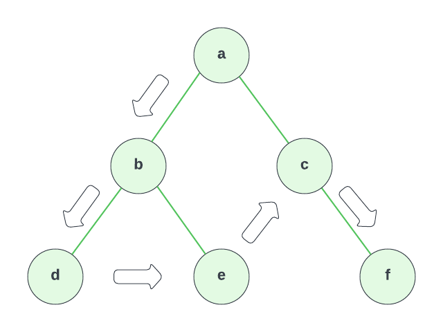

Depth First Traversal
Now we are going to get into some algorithms that involve binary trees. This one is called Depth First Traversal. This is a traversal algorithm where the algorithm starts at a root node, which we know is the one at the top of the tree with no parent, and explores as far as possible along each branch before backtracking.
So if we look at the following tree:

We would start at a and then go to b. From here, we would go to d because we are going as far as possible along each branch before backtracking. d is as far as we can go on this path because it is a leaf node, which means it has no children. So now we can move over to e. If e had a child, we would move down, but since it doesn't, we're going to move over to c. From c, we can move down in depth to f.
So this pattern would be a, b, d, e, c, f.
Now we want to implement this algorithm. We are going to use a stack to implement this algorithm because we want to keep track of the nodes we have visited. Remember a stack is a LIFO data structure, which means Last In First Out. So the last node we visit will be the first node we pop off the stack. When a node is popped off or removed from the stack, we can say that node has been visited. When a node is popped off the stack, it will be put in a variable called current. We will then check if current has a right child. If it does, we will add it to the stack. If it doesn't, we will check if it has a left child. If it does, we will add it to the stack. If it doesn't, we will pop the next node off the stack and repeat the process.
Let's implement this in TypeScript. We will use the same Node class we used in the previous lesson. We will first use a standard array as our stack, but then use the Stack class that we created a few lessons ago.
export class Node<T> {
data: T;
left: Node<T> | undefined = undefined;
right: Node<T> | undefined = undefined;
constructor(data: T) {
this.data = data;
}
}
export function depthFirstTraversal(
root: Node<unknown> | undefined
): unknown[] {
if (!root) {
return [];
}
const result: unknown[] = [];
const stack: Node<unknown>[] = [];
stack.push(root);
while (stack.length > 0) {
const current = stack.pop();
current && result.push(current.data);
if (current?.right) {
stack.push(current.right);
}
if (current?.left) {
stack.push(current.left);
}
}
return result;
}
We did exactly what I described above. We first check if the root node exists. If it doesn't, we return an empty array.
We then create a result array and a stack array. We then push the root node onto the stack.
We then start a while loop that will run as long as the stack array has a length greater than 0. Inside the while loop, we pop the last node off the stack and add it to the result array.
We then check if the current node has a right child. If it does, we add it to the stack. We then check if the current node has a left child. If it does, we add it to the stack.
We then repeat the process until the stack array has a length of 0. We then return the result array.
Using the Stack Class
Now, let's refactor this code to use the Stack class we created a few lessons ago. You can do this as an exercise, or you can look at the code below.
export class Node<T> {
data: T;
left: Node<T> | undefined = undefined;
right: Node<T> | undefined = undefined;
constructor(data: T) {
this.data = data;
}
}
export function depthFirstTraversal(
root: Node<unknown> | undefined
): unknown[] {
if (!root) {
return [];
}
const result: unknown[] = [];
const stack = new Stack();
stack.push(root);
while (!stack.isEmpty()) {
const current = stack.pop();
result.push(current.data);
if (current.right) {
stack.push(current.right);
}
if (current.left) {
stack.push(current.left);
}
}
return result;
}
This code is very similar, except we used a pre-defined Stack class instead of a standard array. We also used the isEmpty() method instead of checking the length of the array.